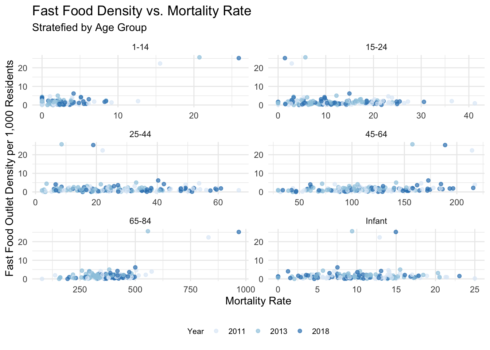
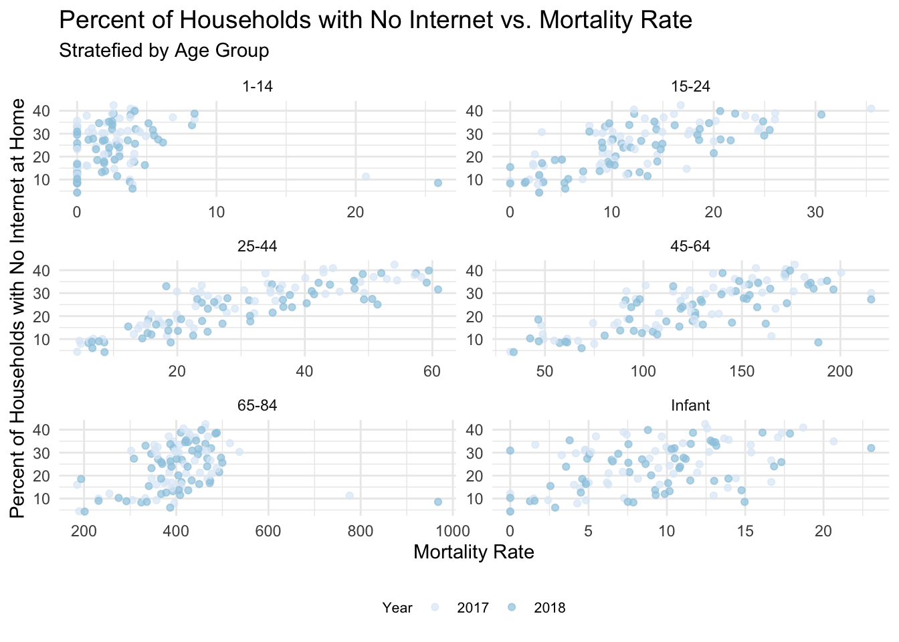

Code
# Load libraries
library(tidyverse)
library(jsonlite)
library(dplyr)
library(ggplot2)
library(purrr)
library(sf)
library(knitr)
path = here::here()# Load libraries
library(tidyverse)
library(jsonlite)
library(dplyr)
library(ggplot2)
library(purrr)
library(sf)
library(knitr)
path = here::here()Several studies have found that socioecomonic disadvantage was associated with premature mortality (Glei, Lee, and Weinstein 2022; Lawrence, Kucharaska-Newton, and Magnani 2024). This result highlights the need to further study the impacts of socioeconomic status on life course and mortality. In this analysis, we focus on the mortality trends in Baltimore and how various socioeconomic factors, such as vehicle availability, internet access, and fast food density, affect mortality rates across different age groups. The target audience for the analysis includes anyone that might be curious about public health and the mortality trends in Baltimore.
The data for this analysis was sourced from Open Baltimore (Baltimore City 2024) - a data set from the Baltimore City Health Department. Open Baltimore contains the urls for JSON files containing the data we need. Neighbourhood-specific mortality data for six different age groups (Infant, 1-14, 15-24, 25-44, 45-64, and 65-84) were collected for between 2011 and 2018.
We also downloaded socioeconomic data such as Percent of Households with No Vehicle Available, Percent of Households with No Internet at Home, and Fast Food Outlet Density per 1,000 Residents.
Next, we load the JSON files that were retrieved from the urls in Open Baltimore.
# Load libraries
library(tidyverse)
# Load raw data
open_baltimore = read.csv("data/raw/Open Baltimore.csv")
# Filter data to only include rows that contain the word "mortality"
mortality_data = open_baltimore %>%
filter(grepl("mortality", title, ignore.case = TRUE) |
grepl("mortality", description, ignore.case = TRUE))
# Download json mortality data
mortality_urls = paste0(mortality_data$url,
"/0/query?where=1%3D1&outFields=*&outSR=4326&f=json")
## Helper function to extract ages from the title of each mortality data file
extract_ages = function(title) {
if (!grepl("\\d+-\\d+", title)) {
return("infant")
}
else {
return(stringr::str_extract(title, regex("\\d+-\\d+")))
}
}
ages = mapply(extract_ages, mortality_data$title)
mortality_filenames = paste0("data/json/mortality_", ages, ".json")
mapply(curl::curl_download, urls, filenames)
# Download the data for (1) percentage of households with no vehicles available,
# (2) percentage of households with no internet at home, and (3) fast food
# outlet density per 1,000 residents.
socioeconomic_data = open_baltimore %>%
filter(grepl("Percent of Households with No Vehicles Available", title, ignore.case = TRUE) |
grepl("Percent of Households with No Internet at Home", title, ignore.case = TRUE) |
grepl("Fast Food Outlet Density per 1,000 Residents", title, ignore.case = TRUE))
socioeconomic_urls = paste0(socioeconomic_data$url,
"/0/query?where=1%3D1&outFields=*&outSR=4326&f=json")
socioeconomic_filenames = c("data/json/fastfood.json", "data/json/no_vehicles.json", "data/json/no_internet.json")
mapply(curl::curl_download, urls, filenames)After loading the data, we extract important features, such as mortality rate and transform the data to long format for visualization. An example of how this is done is below.
# Function to extract attributes from the JSON structure
extract_attributes <- function(json_data) {
map_df(json_data$features, ~ .x$attributes)
}
# Read mortality data for each age group
mortality_infant <- read_json(paste0(path,"/data/json/mortality_infant.json")) %>% extract_attributes()
mortality_1_14 <- read_json(paste0(path, "/data/json/mortality_1-14.json")) %>% extract_attributes()
mortality_15_24 <- read_json(paste0(path, "/data/json/mortality_15-24.json")) %>% extract_attributes()
mortality_25_44 <- read_json(paste0(path, "/data/json/mortality_25-44.json")) %>% extract_attributes()
mortality_45_64 <- read_json(paste0(path, "/data/json/mortality_45-64.json")) %>% extract_attributes()
mortality_65_84 <- read_json(paste0(path, "/data/json/mortality_65-84.json")) %>% extract_attributes()
# Read predictor data (e.g., no internet, no vehicles, fast food)
no_internet <- read_json(paste0(path, "/data/json/no_internet.json")) %>% extract_attributes()
no_vehicles <- read_json(paste0(path, "/data/json/no_vehicles.json")) %>% extract_attributes()
fast_food <- read_json(paste0(path, "/data/json/fastfood.json")) %>% extract_attributes()
# Reshape data to long format for plotting
reshape_to_long = function(data, age_group, prefix, value) {
data %>%
select(CSA2010, starts_with(prefix)) %>%
pivot_longer(cols = starts_with(prefix), names_to = "year", values_to = paste0(value, "_rate")) %>%
mutate(year = as.integer(str_extract(year, "\\d+$")),
age_group = age_group)
# data$mean = rep(mean(data$morality_rate), nrow(data))
}
mortality_data <- bind_rows(
reshape_to_long(mortality_infant, "Infant", "mort1", "mort"),
reshape_to_long(mortality_1_14, "1-14", "mort14", "mort"),
reshape_to_long(mortality_15_24, "15-24", "mort24", "mort"),
reshape_to_long(mortality_25_44, "25-44", "mort44", "mort"),
reshape_to_long(mortality_45_64, "45-64", "mort64", "mort"),
reshape_to_long(mortality_65_84, "65-84", "mort84", "mort"))
mortality_data$year = mortality_data$year + 2000
mean_mortality = mortality_data %>% group_by(age_group, year) %>% summarise(mean_mort = mean(mort_rate, na.rm = TRUE))After reading in theh JSON files and extracting our desired features, the data dictionary looks like this.
kable(head(mortality_data))| CSA2010 | year | mort_rate | age_group |
|---|---|---|---|
| Allendale/Irvington/S. Hilton | 2011 | 14.785992 | Infant |
| Allendale/Irvington/S. Hilton | 2012 | 16.935484 | Infant |
| Allendale/Irvington/S. Hilton | 2013 | 14.143095 | Infant |
| Allendale/Irvington/S. Hilton | 2014 | 11.373578 | Infant |
| Allendale/Irvington/S. Hilton | 2015 | 10.610080 | Infant |
| Allendale/Irvington/S. Hilton | 2016 | 8.992806 | Infant |
We used a variety of plots to visualize the relationships between socioeconomic covariates and mortality rates over time and across age groups. Scatter plots and trend lines were used to show correlations, and spatial maps were generated to highlight geographical variations in mortality.
Figure 1 visualizes mortality rates across multiple age groups (Infant, 1-14, 15-24, 25-44, 45-64, and 65-84) from 2011 to 2018.
We notice that…
Infant Mortality: While lower than the older age groups, there are notable spikes in infant mortality, particularly in 2016.
Youth (1-14 and 15-24): These groups maintain relatively low mortality rates over time.
Older Age Groups (45-64 and 65-84): These groups consistently exhibit higher mortality rates compared to younger groups. The mortality rate in these groups shows some fluctuations, but overall, the trend remains stable over time.
# Plot mortality rates for each age group over time
ggplot(mortality_data, aes(x = as.factor(year), y = mort_rate, color = age_group)) +
geom_jitter(alpha = 0.7) +
geom_line(data = mean_mortality, aes(x = as.factor(year), y = mean_mort, group = age_group), size = 1.5) +
facet_wrap(~age_group, scales = "free", ncol = 2) +
theme_minimal() +
labs(title = "Mortality Rate Over Time",
subtitle = "Stratefied by Age Group",
x = "Year",
y = "Mortality Rate") +
scale_color_brewer("Age Group", palette = "Blues") +
theme(legend.position = c(.77,.98),
legend.direction ="horizontal",
legend.text = element_text(size = 8),
legend.title = element_text(size = 8),
strip.background = element_blank(),
strip.text = element_blank()) 
In the margins, we show the distributions of each socioeconomic covariate across Baltimore neighbourhoods. The panels below illustrate the relationships between each of the socioeconomic covariates and mortality rates, stratified by age group. For each covariate, we isolated the data to years where mortality data was also reported.
# Adding covariates to data frame
fastfd_data = reshape_to_long(fast_food[,1:5], "", "Fastfd", "fastfd") %>%
subset(select = -c(age_group))
fastfd_data$year = fastfd_data$year + 2000
fastfd_mortality_data = inner_join(mortality_data, fastfd_data,
by = c("CSA2010", "year"))
nohhint_data = reshape_to_long(no_internet[,1:4], "", "nohhint", "nohhint") %>%
subset(select = -c(age_group))
nohhint_data$year = nohhint_data$year + 2000
nohhint_mortality_data = inner_join(mortality_data, nohhint_data,
by = c("CSA2010", "year"))
novhcl_data = reshape_to_long(no_vehicles[,1:10], "", "novhcl", "novhcl") %>%
subset(select = -c(age_group))
novhcl_data$year = novhcl_data$year + 2000
novhcl_mortality_data = inner_join(mortality_data, novhcl_data,
by = c("CSA2010", "year"))
# Plot distribution of fast food density
D1 = ggplot(fastfd_data, aes(x = fastfd_rate)) +
geom_histogram(aes(y=..density..), bins = 50, alpha = 0.5, fill = "blue") +
theme_minimal() +
labs(title = "Distribution of Fast Food Outlet Density per 1,000 Residents",
x = "Fast Food Outlet Density per 1,000 Residents",
y = "Frequency")
# Plot distribution of percentage of households with no internet
D2 = ggplot(nohhint_data, aes(x = nohhint_rate)) +
geom_histogram(aes(y=..density..), bins = 50, alpha = 0.5, fill = "blue") +
theme_minimal() +
labs(title = "Distribution of Percent of Households with No Internet at Home",
x = "Percent of Households with No Internet at Home",
y = "Frequency")
# Plot distribution of percentage of households with no internet
D3 = ggplot(novhcl_data, aes(x = novhcl_rate)) +
geom_histogram(aes(y=..density..), bins = 50, alpha = 0.5, fill = "blue") +
theme_minimal() +
labs(title = "Distribution of Percent of Households with No Vehicles Available",
x = "Percent of Households with No Vehicles Available",
y = "Frequency")
gridExtra::grid.arrange(D1, D2, D3, ncol = 1)Fast Food Outlet Density: The distribution is heavily skewed towards low fast food density per 1,000 residents with a few outliers.
Percentage of Households with No Internet at Home: A notable proportion of households have no internet access, with the distribution showing multiple peaks around 15-20% and 25-35%.
Percentage of Households with No Vehicles Availabile: A notable percentage of households lack vehicle access, with the median falling around 30% and some areas reaching over 60%.
Click on each tab to see the corresponding panel The figure caption summarizes some key insights.
# Relationship between Fast Food Density and Mortality
ggplot(fastfd_mortality_data, aes(x = mort_rate, y = fastfd_rate, color = as.factor(year))) +
geom_jitter(alpha = 0.7) +
geom_smooth() +
facet_wrap(~age_group, scales = "free", ncol = 2) +
theme_minimal() +
labs(title = "Fast Food Density vs. Mortality Rate",
subtitle = "Stratefied by Age Group",
x = "Mortality Rate",
y = "Fast Food Outlet Density per 1,000 Residents") +
scale_color_brewer("Year", palette = "Blues") +
theme(legend.position = "bottom",
legend.direction ="horizontal",
legend.text = element_text(size = 8),
legend.title = element_text(size = 8),
plot.title = element_text(size = 14)) 
ggplot(nohhint_mortality_data, aes(x = mort_rate, y = nohhint_rate, color = as.factor(year))) +
geom_jitter(alpha = 0.7) +
facet_wrap(~age_group, scales = "free", ncol = 2) +
theme_minimal() +
labs(title = "Percent of Households with No Internet vs. Mortality Rate",
subtitle = "Stratefied by Age Group",
x = "Mortality Rate",
y = "Percent of Households with No Internet at Home") +
scale_color_brewer("Year", palette = "Blues") +
theme(legend.position = "bottom",
legend.direction ="horizontal",
legend.text = element_text(size = 8),
legend.title = element_text(size = 8),
plot.title = element_text(size = 14)) 
ggplot(novhcl_mortality_data, aes(x = mort_rate, y = novhcl_rate, color = as.factor(year))) +
geom_jitter(alpha = 0.7) +
facet_wrap(~age_group, scales = "free", ncol = 2) +
theme_minimal() +
labs(title = "Percent of Households with No Vehicles Available vs. Mortality Rate",
subtitle = "Stratefied by Age Group",
x = "Mortality Rate",
y = "Percent of Households with No Vehicles Available") +
scale_color_brewer("Year", palette = "Blues") +
theme(legend.position = "bottom",
legend.direction ="horizontal",
legend.text = element_text(size = 8),
legend.title = element_text(size = 8),
plot.title = element_text(size = 14)) Figure 6 presents spatial maps of mortality rates across Baltimore from 2011 to 2018 for different age groups. Each row corresponds to an age group, and each column to a year. This figure was previously created for another class. In order to save some time, we added the image to the directory and called it directly.
Geographical Mortality Patterns: Hotspots for mortality consistently appear in certain areas of Baltimore. For example, areas in the northern and central regions exhibit high mortality rates across different age groups. Infant mortality appears to be much higher in a few central regions than in surrounding regions.
Temporal Changes: While certain hotspots remain constant, there are areas where mortality fluctuates. Some hotspots, particularly in the infant and 15-24 age groups, appear to have decreasing mortality rates over time. Other hotspots in the 65-84 group, for example, seem to have increasing mortality rates in more recent years.
knitr::include_graphics(paste0(path,"/mortality_maps.png"))
The findings highlight significant spatial, temporal, and socioeconomic disparities in mortality rates across Baltimore. Key correlations emerged between mortality and the availability of vehicles, internet access, and fast food density, particularly among older age groups.
The socioeconomic associations with mortality rates can motivate important public health considerations. Although fast food density appears to have little association with mortality rate, there are clear associations between lower rates of home internet access and vehicle availability with higher mortality rate. The trend is less clear in infant and 1-14 age groups, potentially because these populations are less likely to rely on internet and vehicles in their daily life. Furthermore, these populations have very low mortality rates. Primary drivers of youth mortality may be due to issues other than the socioeconomic covariates we tested. Furthermore, in the 65-84 population, the associations are also less apparent. This can be, in part, explained by the fact that health conditions related to old age may have a stronger impact on mortality rates than socioeconomic conditions.
Some limitations of the study include that this analysis relies on correlation data and cannot make causal inferences. Further research should explore causal pathways and investigate additional socioeconomic factors that may contribute to the observed disparities in mortality.
This analysis highlights the complex interplay between socioeconomic factors and mortality rates across Baltimore. By focusing on both geographic and temporal trends, we have identified critical areas where public health interventions may be most effective in reducing mortality rates and addressing health disparities.
Here is a list of core functions that were used in the analysis:
ggplot2 : geom_histogram(), geom_jitter(), geom_line()
tidyr : pivot_longer()
dplyr : group_by(), mutate(), select(), summarise()